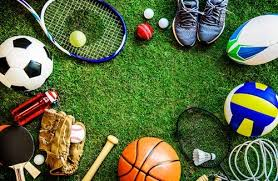

Види спорту
Спорт - немов всесвіт. У
ньому теж запалюються і загасають зірки
Що таке спорт?
Спорт – це організована по певним правилам діяльність людей, з метою вдосконалення та співставлення своїх фізичних або інтелектуальних здібностей, а також підготовка до цього співставлення та міжособистісні стосунки виникаючі в процесі підготовки. (джерело вікіпедія)
Під словом підготовка мається на увазі процес тренувань а під словом співставлення змагання.
Перш за все хочу сказати що поняття спорту неможливо вписати у кілька рядків тексту, тому що спорт “із середини” має багато різних ознак, які неможливо пізнати людині яка не є спортсменом. Для кращого сприйняття тексту, я буду використовувати наступний список.

Позитивні властивості спорту (непрофесійного)
- заняття спортом знімає стрес та нервове напруження. У всіх людей, в результаті нашої суспільної життєдіяльності, в незалежності від роду заняття, накопичується негативна енергія (гнів, стресс), яку потрібно періодично знімати, для того щоб не поїхала криша.
- спорт позитивно впливає на наше здоров’я. Існує вислів, “в наш час здорових немає, є недообслідуванні”. Так от спорт може вирішити цілий спектр проблем із здоров’ям, це зайва вага, недостатня вага, поганий імунітет, проблеми із опорно-руховою системою, та багато інших.
- спорт робить вас фізично привабливішими. Це може допомогти кожному у жорсткому процесі природнього відбору)).
- заняття спортом призводять до утворення нових знайомств. Коли вам бракує уваги та спілкування, ви можете просто піти на тренування і поспілкуватися із іншими спортсменами. Тим більше шо в час розквіту соціальних мереж, людям справді бракує живого спілкування.
- заняття спортом не потребують значних фінансових вкладень. Спорт ще можна назвати – дешевим рішенням.
Негативні сторони спорту (непрофесійного)
- несумісність із змінами у способі життя сучасних людей. З розвитком технологій людина все меньше і меньше напружує свої частини тіла, тим самим стає дуже лінивою істотою. А спорт вимагає хорошої віддачі у фізичному і психологічному плані, і цим він суперечить тенденціям до глобального олінивлювання суспільства. Якщо спорт втарчає популярність, то це не спорт стає гіршим а люди стають лінивіші.
- спорт це ризик. Заняття спортом не завжди приводять до бажаних результатів, у спорті бувають травми, у спорті бувають розчарування а також неправильне занняття та відношення до спорту це пуста втрата часу.
Mens sana in corpore sano
Обирайте найкраще для себе!